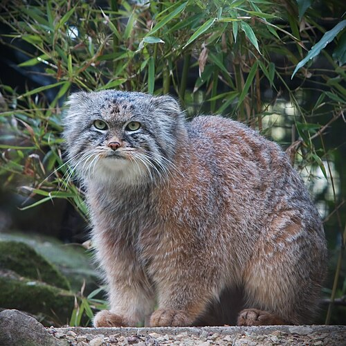
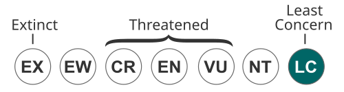

The Pallas's cat (Otocolobus manul), also known as the manul, is a small wild cat with long and dense light grey fur, and rounded ears set low on the sides of the head. Its head-and-body length ranges from 46 to 65 cm (18 to 26 in) with a 21 to 31 cm (8.3 to 12.2 in) long bushy tail. It is well camouflaged and adapted to the cold continental climate in its native range, which receives little rainfall and experiences a wide range of temperatures.
The Pallas's cat was first described in 1776 by Peter Simon Pallas, who observed it in the vicinity of Lake Baikal. Since then, it has been recorded across a large region in Central Asia, albeit in widely spaced sites from the Caucasus, Iranian Plateau, Hindu Kush, parts of the Himalayas, Tibetan Plateau to the Altai-Sayan region and South Siberian Mountains. It inhabits rocky montane grasslands and shrublands, where the snow cover is below 15–20 cm (6–8 in). It finds shelter in rock crevices and burrows, and preys foremost on lagomorphs and rodents. The female gives birth to etween two and six kittens in spring.
Due to its widespread range and assumed large population, the Pallas's cat has been listed as Least Concern on the IUCN Red List since 2020. Some population units are threatened by poaching, prey base decline due to rodent control programs, and habitat fragmentation as a result of mining and infrastructure projects.
The Pallas's cat has been kept in zoos since the early 1950s. As of 2018, 60 zoos in Europe, Russia, North America and Japan participate in Pallas's cat captive breeding programs.
Etymology
'Manul' is the Pallas's cat's name in the Mongolian language. It is called 'manol' in the Kyrgyz language.[3] The common name 'Pallas's cat' was coined by William Thomas Blanford in honour of Peter Simon Pallas.[4][failed verification]
Taxonomy
Felis manul was the scientific name used by Peter Simon Pallas in 1776, who first described a Pallas's cat that he had encountered near the Dzhida River southeast of Lake Baikal.[5][3][6] Several Pallas's cat zoological specimens were subsequently described:
- Felis nigripectus proposed by Brian Houghton Hodgson in 1842 was based on three specimens from Tibet.[7]
- Otocolobus manul ferrugineus proposed by Sergey Ognev in 1928 was an erythristic specimen from the Kopet Dag mountains.[8]
Otocolobus was proposed by Johann Friedrich von Brandt in 1842 as a generic name.[9][10] Reginald Innes Pocock recognized the taxonomic rank of Otocolobus in 1907, described several Pallas's cat skulls in detail and considered the Pallas's cat an aberrant form of Felis.[11]
In 1951, John Ellerman and Terence Morrison-Scott considered:
- the nominate subspecies Felis manul manul to be distributed from Russian Turkestan to Transbaikalia;[6]
- F. m. nigripecta to be distributed in Tibet and Kashmir;[6]
- F. m. ferruginea occurring from southwestern Turkestan and the Kopet Dag mountains to Afghanistan and Balochistan.[6]
Since 2017, the Cat Classification Task Force of the Cat Specialist Group recognises only two subspecies as valid taxa, namely:[1]
- O. m. manul syn. O. m. ferrugineus in the western and northern part of Central Asia from Iran to Mongolia;
- O. m. nigripectus in the Himalayas from Kashmir to Bhutan.
Phylogeny
Phylogenetic analysis of the nuclear DNA in tissue samples from all Felidae species revealed that the evolutionary radiation of the Felidae began in Asia during the late Miocene around 14.45 to 8.38 million years ago.[12][13] Analysis of mitochondrial DNA of all Felidae species indicates a radiation at around 16.76 to 6.46 million years ago.[14] The Pallas's cat is estimated to have genetically diverged from a common ancestor with the genus Prionailurus between 8.55 to 4.8 million years ago based on analysis of nuclear DNA.[12] Based on analysis of mitochondrial DNA, it diverged 9.4 to 1.46 million years ago from a common ancestor with Felis.[14]
Characteristics
The Pallas's cat's fur is light grey with pale yellowish-ochre or pale yellowish-reddish hues.[7] Some hair tips are white and some blackish. Its fur is greyer and denser with fewer markings visible in winter than in the summer.[15]: 668–669 The forehead and top of the head are light grey with small black spots. It has two black zigzag lines on the cheeks running from the corner of the eyes to the jaw joints.[7] Its chin, whiskers, lower and upper lips are white.[15]: 669 It has narrow black stripes on the back, consisting of five to seven dark transversal lines across the lower back.[7] Its grey tail has seven narrow black rings and a black tip.[15]: 669 The underfur is 40 mm (1.6 in) long and 19 μm thick, and the guard hairs up to 69 mm (2.7 in) long and 93 μm thick on the back. Its fur is soft and dense with up to 9,000 hairs/cm2 (58,000 hairs/in2).[15]: 666
Distribution and habitat
Behavior and ecology
Threats
Conservation
In popular culture
References
External links
Palla's cat
A Palla's cat at Rotterdarm Zoo.
Conservation Status
Least concern.
Scientific classification
Domain: Eukaryota
Kingdom: Animalia
Phylum: Chordata
Class: Mammalia
Order: Carnivora
Suborder: Feliformia
Family: Felidae
Subfamily: Felinae
Genus: Otocolobus
Species: O. manul
Binomial name
Otocolobus manul
(Pallas, 1776)
Subspecies
- O. m. manul (Pallas, 1776)
- O. m. nigripectus (Hodgson, 1842)
The distribution of Palla's cat